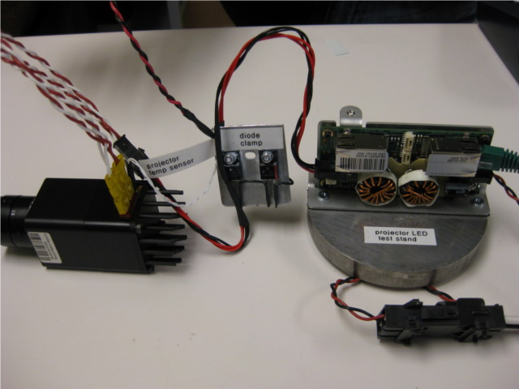
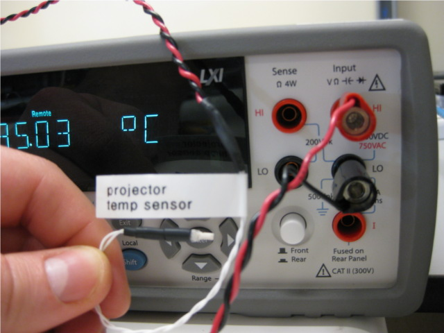
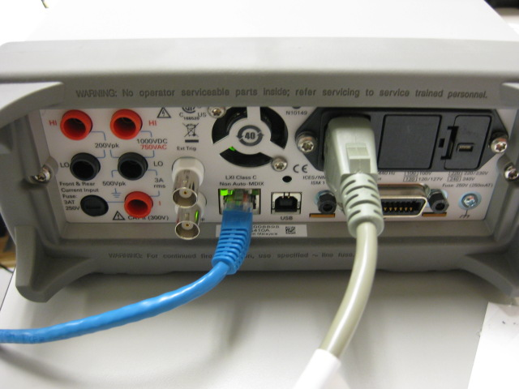
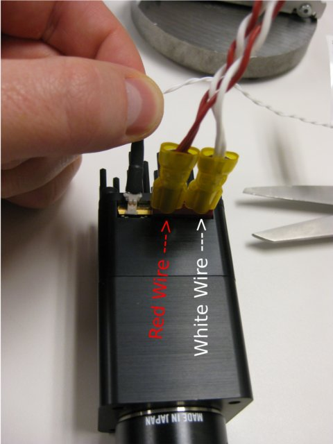
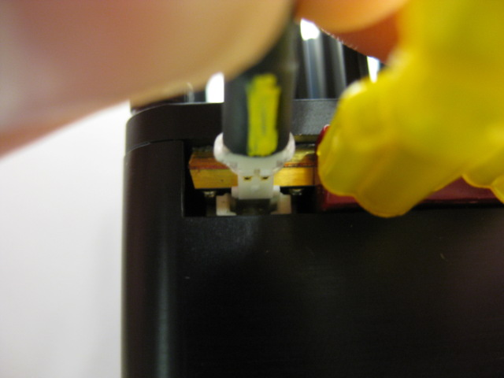
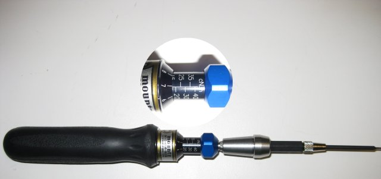
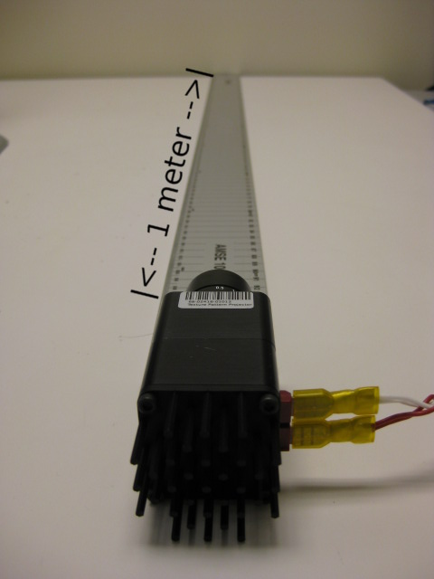
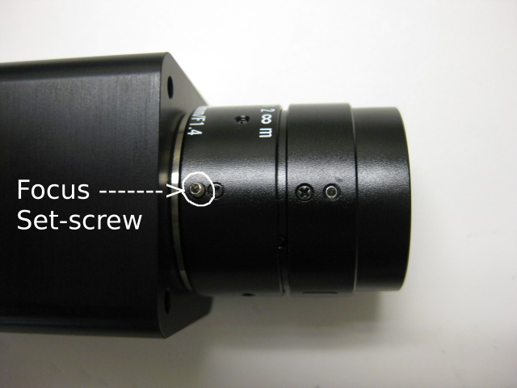

Projector LED Test
Teststand Setup (Only needs to be done once)
Connect Projector MCB to powerboard output and EtherCAT. Diode clamp should be between MCB and projector LED.

Connect temperature sensor cable to DMM.

Connect DMM to network using Ethernet jack on back. Test uses DMM1, change test configuration if different DMM is used.

Projector LED Connections
IMPORTANT Verify Projector power leads are not reversed.

Connect temperature sensor cable to Projector LED. Connector is polarized.

Tools
Last test step requires using set screws to adjust aperature and focus.
Make sure torque is set correctly on torque tool.

Running Test
Qualifaction has two step takes about 1 minute. Second test takes about 4 minutes.
During second test you will be ask to focus projector LED.
Place projector 1 meter from wall and adjust focus to get the sharpest image possible.

Tighten set-screw after adjustment is complete.
